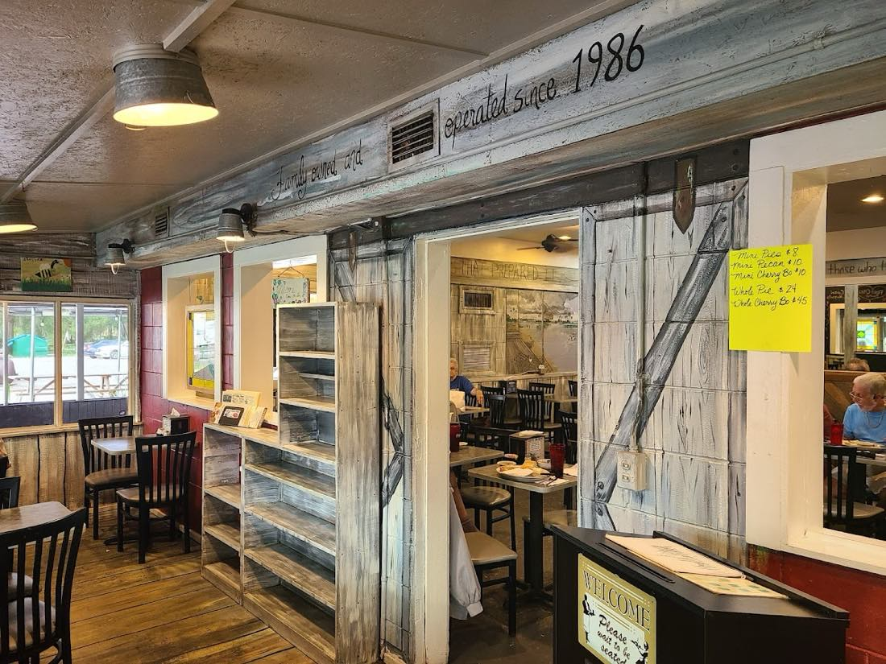
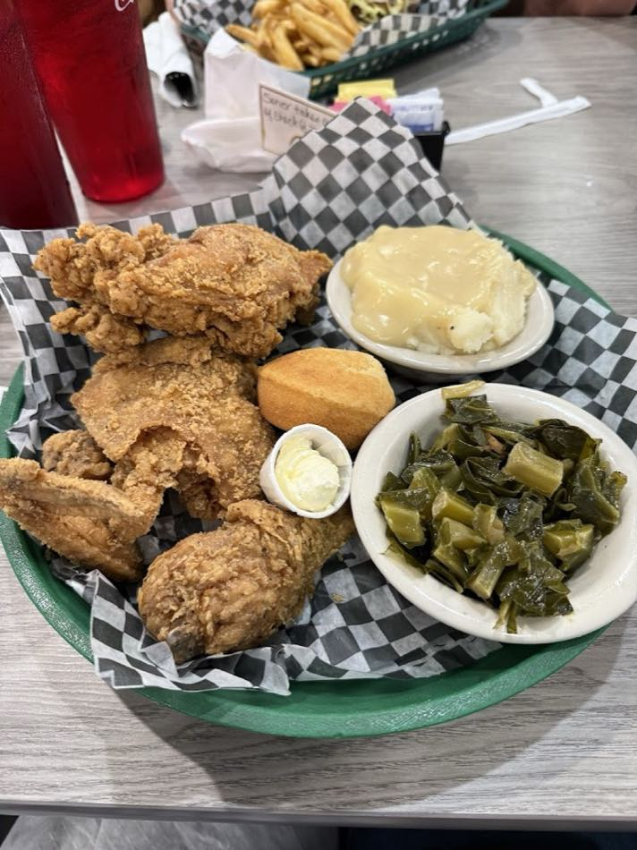
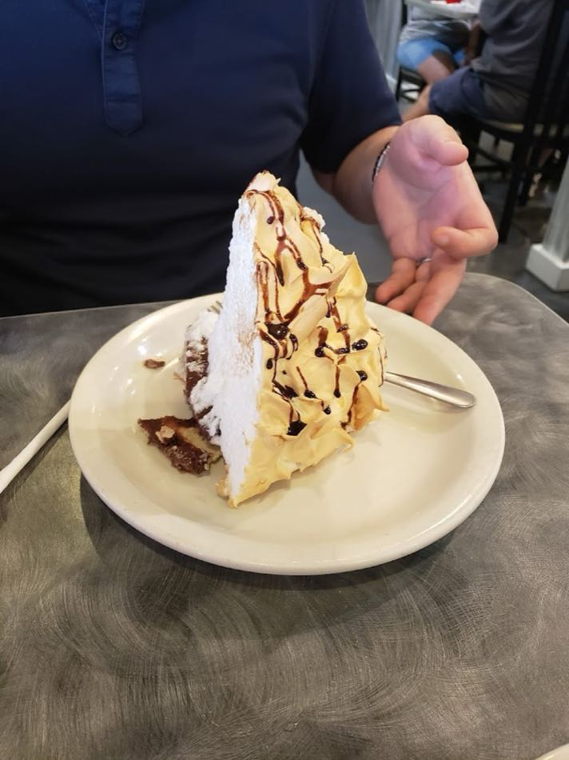

Our porch, your table
Three generations.
One little kitchen.
Tucked along N Florida Ave in Dunnellon, the Front Porch has been serving honest Southern home cooking since 1986 — the kind of place where the tomatoes taste like your grandfather grew them and the pie comes home with you.
It's locally owned and run by three generations of one loving family. Chef Mike still hunts down real vegetables and real ingredients, every plate comes out on real plates, and yes — only a straw if you ask. Quaint, cozy, and unapologetically homemade.


Hungry yet?
Southern plates,
made from scratch.
Hand-breaded fried chicken. Slow Southern-style pot roast so tender it falls apart. Chicken & dumplings, homemade soups, field peas, sweet potato, slaw, and Cuban bread on the side. Generous portions, fair prices, no shortcuts.
It's in the name
We're not just a restaurant.
We're a pie shop.
Real chunky fruit, short-crust pastry, none of that purified sugary jelly. Folks drive hours and leave with a whole pie in the back seat — don't say we didn't warn you.
- Banana Cream
- Fresh Peach
- Apple
- Strawberry & Rhubarb
- Peach Cobbler
- Carrot Cake
- Strawberry Shortcake
- Ask what's fresh

“We do not have WiFi.
Talk to each other…
pretend it's 1986!”
That's painted right on our wall. Come unplug, slow down, and eat like family did before phones got loud.
— Straight off the Front Porch dining-room wall
Word of mouth
4.4★ from 3,400+ folks
“The food tasted like it was made with such love. I had the chicken & dumpling special… we were so full we took a banana cream pie home and oh my — tasted so good. Will definitely go back.”
“Quaint, locally owned and welcoming. The Southern pot roast is one of the best I've had. The peach pie was packed with real chunky slices of sweet juicy peaches. Now one of our favorite places.”
“All servers wonderful. Chef Mike came out and explained the search for real veggies — which is why the tomatoes were as good as my Papa's 50 years ago. Three generations of a loving family run this place.”
Come on by
Find the Front Porch
(352) 489-4708
Price $10–20 · Dine-in · Takeout · Catering · Cash & cards
- Outdoor seating
- Live music
- Kids' menu
- Great coffee
- Great dessert
- Group friendly
- Counter service
| Monday | Closed |
|---|---|
| Tuesday | 7:00 AM – 8:30 PM |
| Wednesday | 7:00 AM – 8:30 PM |
| Thursday | 7:00 AM – 8:30 PM |
| Friday | 7:00 AM – 8:30 PM |
| Saturday | 7:00 AM – 8:30 PM |
| Sunday | 7:00 AM – 8:00 PM |
Kitchen runs all day — breakfast, lunch & dinner. Closed Mondays so the family gets a porch day too.